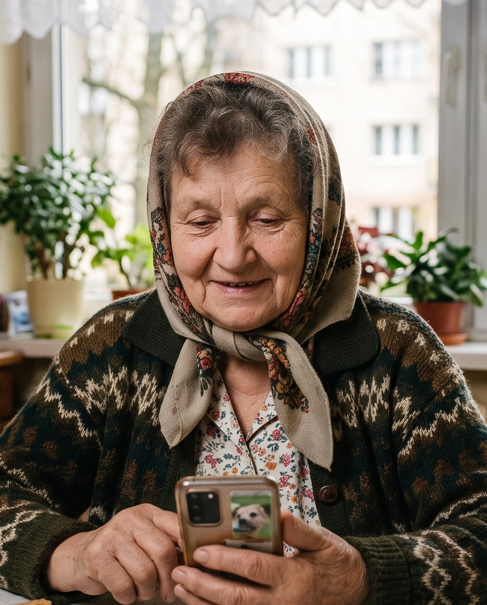

Rodzic mówi własnymi słowami
„Chcę wysłać zdjęcie do wnuczki”. To wystarczy, żeby zacząć.
Spokojny przewodnik AI po telefonie dla osób starszych. Tłumaczy prostym językiem, krok po kroku, i niczego nie klika za nich.

Naciśnij i powiedz, czego potrzebujesz
Ty jesteś w pracy, a rodzic utknął na prostej rzeczy. To nie brak umiejętności, tylko technologia, która za rzadko mówi ludzkim językiem.
„Chcę tylko
załatwić prostą sprawę.”
Twoja mama nie musi pamiętać nazw aplikacji ani technicznych słów. Mówi tak, jak do Ciebie przez telefon.
„Chcę wysłać zdjęcie do wnuczki”. To wystarczy, żeby zacząć.
Zamienia zwykłe słowa na konkretny plan działania, bez żargonu.
Jedna jasna wskazówka naraz, zawsze w spokojnym tempie.
Teresa nie klika za rodzica. Pokazuje, gdzie nacisnąć, a on wykonuje każdy krok samodzielnie.
Najpierw otwórz aplikację „Zdjęcia”. Jej ikona wygląda jak kolorowy kwiatek.
Co drugi polski senior zetknął się już z próbą oszustwa w internecie. Teresa widzi tyle, ile potrzebuje, żeby wskazać drogę, dlatego możesz ją spokojnie zainstalować mamie czy tacie.
„To przewodnik,
nie pilot do telefonu.”
Pokazuje, gdzie nacisnąć. Decyzja i ruch zawsze należą do niego.
Hasła, PIN-y i kody SMS zostają wyłącznie u właściciela telefonu.
Nie wykonuje przelewów ani zakupów, nawet na wyraźną prośbę.
Podpowiedzi zamkniesz w każdej chwili jednym przyciskiem.
Ty instalujesz i opłacasz, rodzic po prostu korzysta. Konfiguracja zajmuje kilka minut, a zamiast tłumaczyć ten sam ekran po raz piąty, masz pewność, że nic się nie popsuje.
W Polsce żyje około 10 milionów osób po sześćdziesiątce. Podstawowe umiejętności cyfrowe ma tylko 13% z nich, reszta prosi bliskich o pomoc albo odpuszcza.
Nie. Teresa pokazuje kolejne kroki i tłumaczy, co zrobić, ale każde kliknięcie senior wykonuje samodzielnie. Dzięki temu naprawdę uczy się obsługi telefonu, zamiast uzależniać się od pomocy.
Nie. Przy logowaniu Teresa prowadzi Cię przez proces, ale nie odczytuje, nie zapisuje i nie przechowuje haseł, PIN-ów ani kodów SMS.
Podstawowe czynności będą bezpłatne. Plan Dla rodziny będzie kosztować 19,99 zł miesięcznie, a pierwszy miesiąc jest za darmo. Wszystkie plany znajdziesz na stronie Cennik.
Przygotowujemy Teresę na najpopularniejsze smartfony. Szczegóły dotyczące wspieranych urządzeń podamy przed premierą.
Tak. Szykujemy prostą instalację z pomocą bliskiej osoby oraz krótką instrukcję dla rodzin, żeby pierwsze uruchomienie zajęło kilka minut.
Zapisz się na listę oczekujących. Przed startem wyślemy Ci zaproszenie do testów i pierwszy miesiąc planu Dla rodziny za darmo.
Współpraca i partnerstwa: hello@teresa.app